← 返回阅读库 · 原论文目录
论文讲解阅读文档 · 表征学习 · v186
Vi2CLR Video and Image for Visual Contrastive Learning of Representation
视频时长 00:09:11；讲解文字 4,539 字符；提取讲解画面 23 张。按视频原顺序阅读，每段文字保留时间戳。
文字来自整段视频的自动语音转写，按自然停顿分段，并与 PPT / 论文页面 / 演示画面对齐。未将讲解压缩为摘要；术语、数字和口述公式请结合画面及原论文核对。 阅读稿已校正规范部分明确术语误识别；原始逐字稿和每处修改记录另行保留。
讲解画面为源视频截图（640×360），不是可编辑 PPT 文件。全片按每秒 2 帧扫描内容变化，逐步展开页保留；连续动画保留代表画面。清晰度受源视频限制。
下载完整资料包 · 含离线 HTML、PDF、Word、全部 PPT 画面和字幕。
原论文与材料
Vi2CLR: Video and Image for Visual Contrastive Learning of Representation · 下载完整 PDF（11 页）
按时间阅读
00:00:00–00:00:22 · 画面 001
 00:00:00–00:00:22 · 画面 001
00:00:00–00:00:22 · 画面 001大家好啊，今天我们的快速水一篇论文 Vi2CLR: Video and image for visual contrastive learning of representation 啊。这篇论文呢，首先我们看到 video and image，他们可能要一起呢搞一些事情，然后呢 contrastive learning 啊，我们的熟悉的这个 self-supervised learning 的环节。
下面呢，我们来看本文是具体做了哪些的实现吧。那么首先呢，我们看到我们的输入呢是一个 videovideo 呢它可以直接送到我们这个 3D convolutional encoder 里面，它得到这个 feature，然后过两三 mlp 就一下子映射到我们这个 video latent space 里面，得到它的 latent representation，这是一个非常经典的 self-supervised learning 的配置。
00:00:22–00:00:38 · 画面 002
00:00:22–00:00:38 · 画面 00200:00:38–00:00:39 · 画面 003
00:00:38–00:00:39 · 画面 00300:00:39–00:01:05 · 画面 004
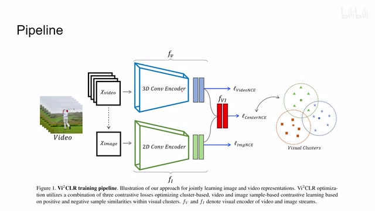
00:00:39–00:01:05 · 画面 004那么同时呢，我们这里呢在这个 video 最中间的一帧，我们要把它提出来，提出来这一张图像。这里呢，作者把这一张图像送到这个 2D convolutional encoder 里面，然后呢同样的得到 feature 之后过这个 mlp，记得这个 mlp 后面都记得加上相应的这个 normalization，然后呢我们就得到这个图像在这个 image latent space 里面的 representation。
那么到这里呢，之前的这些操作呢都是我们经典的这个做 contrastive learning 做 self-supervised learning 它的一些经典的操作。那本文真正有亮点的地方呢，在于我们得到这个 video representation 得到这个 image representation 之后呢，作者呢把它两个串接了起来，串接之后呢我们送到一个 MLP 里面，然后呢得到了一个新的 representation。
00:01:05–00:01:08 · 画面 005
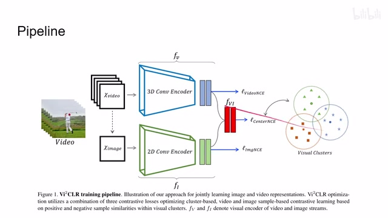
00:01:05–00:01:08 · 画面 00500:01:08–00:02:42 · 画面 006
00:01:08–00:02:42 · 画面 006这里呢，作者把这个新的 representation 叫做这个 jointrepresentation，它是把这个 3D 的 feature 还有这个 2D 的 feature 联合起来的这么一个 representation。所以可以看到在这个模型里面，我们有三个 latent space，那一个是对于 video 的一个，是我们的这个 joint 的一个呢，是专门做 image 的。那么得到这三个 latent space 之后呢，我们就可以对它们施加相应的这个 loss。
那么这个时候有的朋友已经发现了,比如说在过去我们这样这个 SimCLR, MoCo, BYOL 这些东西,它呢在做 loss 的时候呢,至少说要有一个 positive sample,那这个 positive sample 从哪来呢?一般都是我们有一个和这个 encoder 结构一样的另一个 encoder,它是另一个 branch。
然后我们有两个做了不同的 data augmentation 的图像,就是同一张图像做不同的 data augmentation 得到两张图像,分别送到两个 branch 里面得到这个 representation,这样子这两个 representation 互为 positive sample,而在这里我们的每一个 branch 都是只有一只,它没有它的镜像,这里是要怎么处理呢?原来作者使用了聚类的方法来帮我们提供 positive sample。
那更具体来说呢，这里呢作者对这个 joint representation 做了这个聚类。那么很显然的，我们想如果说我们的这个 representation 足够好的话，那么这个在 latent space 中距离我们当前这个样本距离近的这些样本那它就是应该是 positive sample，距离远了呢就应该是 negative sample。
00:02:42–00:03:27 · 画面 007
00:02:42–00:03:27 · 画面 007这里呢做的更加直接我们的 positive sample 呢直接就是这个聚类的中心也就是说假如说我们这个样本是这个方块它的聚类中心就是它的 positive sample 而其他的这个聚类中心呢就这些圆圈呢就是我们这个 sample 的这个 negative sample那这样子有了 positive sample 有了 negative sample，很自然的我们就可以写出它的这个 NCE loss。这里呢就是 info NCE，可以看到呢这个呢是我们当前的这个 representation，然后呢是它所属的类的这个 centroid 也就是聚类中心。
00:03:27–00:03:28 · 画面 008
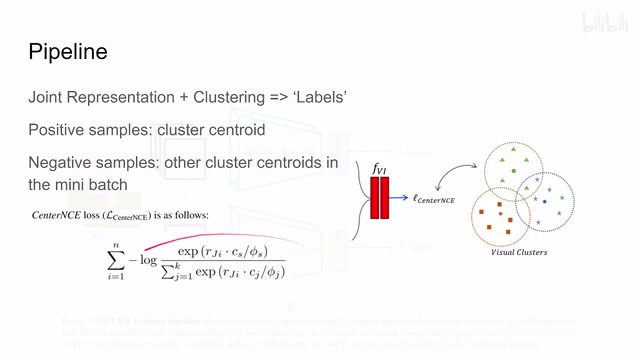
00:03:27–00:03:28 · 画面 00800:03:28–00:03:55 · 画面 009
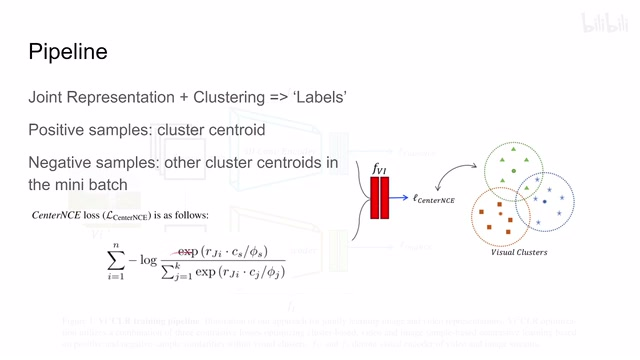
00:03:28–00:03:55 · 画面 009那么这是一个很直接的这个 InfoNCE 的这个设计。那么这样的设计呢，很自然的我们就想到它会把我们这个当前的样本给它推向我们的这个聚类中心，同时呢其他的聚类中心呢要远离这个样本，它是其实上是更方便我们进行聚类的。那么除此之外呢，我们还看到我们有了这个 V representation 和这个 A representation，他们也不能闲着对吧？他们也应该可以做这个 contrastive learning，做 contrastive loss。那么在这里面，他们的 positive sample 和 negative sample 从哪里来呢？刚好我们提到了，我们既然已经有聚类了，那不用白不用对吧？
00:03:55–00:04:14 · 画面 010
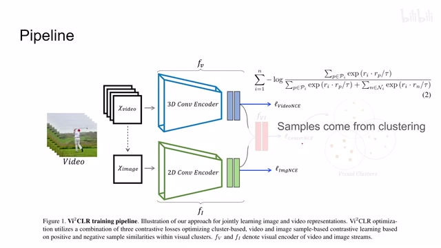
00:03:55–00:04:14 · 画面 01000:04:14–00:04:32 · 画面 011
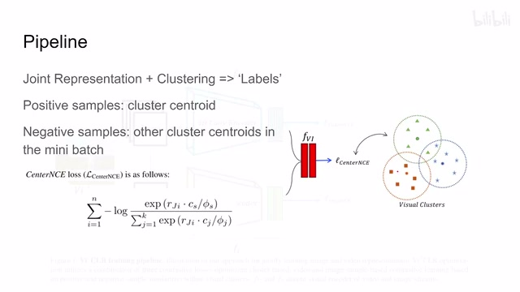
00:04:14–00:04:32 · 画面 011那还是回到这个例子,假如说你这个样本是我们这个当前正在观察一个样本,那在同一个类里面的这个样本,那它当然我们就可以视为是 positive sample,而其他类别里面的这个样本我们就可以视为 negative sample,也是一个非常直接的策略。
00:04:32–00:05:04 · 画面 012
00:04:32–00:05:04 · 画面 012那这样子呢，我们的这个 view 的这个 NCE loss 还有这个 image 的 NCE loss 就可以分别建立起来了。当然呢，这里有一个小细节我们要注意，就是说我们的这个 positive sample 一般我们一个聚类中可能有很多，所以我们的 info NCE 它的分子部分呢要稍作改动。可以看到呢，是所有的这个 positive sample 求和。那这里分母呢也做了相应的改动。那么这种 loss 呢，作者在论文中称之为 Multi-Instance InfoNCE，反正就是一个名词。那本质上就是多了几个真样本。那么下面呢，我们来看作者是应该怎么训练这个东西。那首先呢，我们看到这里呢，我们有我们的这个一大堆 video 啊，定义好了这个 video encoder image encoder。
00:05:04–00:06:25 · 画面 013
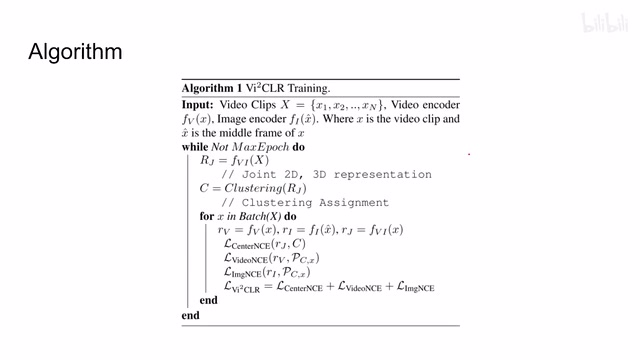
00:05:04–00:06:25 · 画面 013然后呢，我们把这个这个 videoclip 中间的这一帧 x 给它选出来。我们这里看到，首先我们会把这个所有的这个 video 过这个 joint representation。对吧,然后呢,根据这个 joint representation,我们做这个聚类,有了这个初步的聚类中心之后呢,我们就可以开始做真正的训练了,这些 video representation, image representation,joint representation,分别计算出他们的 loss 来,然后直接的把这三个 loss 加起来,然后呢,做这个反向的传播就可以了,当然你很自然而然就想到,在一开始我们的 encoder 啥也不懂,出来的这个结果呢,肯定是千奇百怪的,
那他用这些数据呢做聚类，肯定了一开始效果也不会特别好。但是呢，随着我们的这个聚类供应下来，我们去改进这个 encoder，改进完 encoder 之后呢去更新我们聚类的结果。这样反复的一个过程呢，这是一个 EM algorithm 或者你叫他这个 bootstrapping 也可以对吧？在这么一个过程中呢，他最后呢能够取得一个让人满意的结果。那这个呢，就是一个本文的核心的这个训练的思想。
下面我们来看作者汇报的一些结果首先是 Image Classification 来看一下我们的 Image Encoder 学的怎么样结果还是不错的
00:06:25–00:06:32 · 画面 014
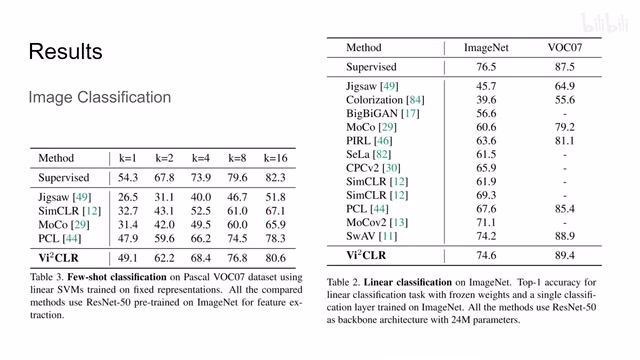
00:06:25–00:06:32 · 画面 01400:06:32–00:06:34 · 画面 015
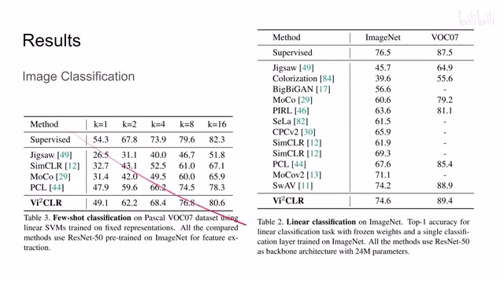
00:06:32–00:06:34 · 画面 01500:06:34–00:06:54 · 画面 016
00:06:34–00:06:54 · 画面 016当然肯定是不错的，因为你想，其实在我们这个联合的去训练这个 video 和这个 image 的同时呢，它有一点这个知识蒸馏的意味在里面，所以说我们这个 image encoder 呢，得到了更多的这个样本或者说是信息，那所以呢，它的表现呢，理所应当的就应该好一些，那么这里呢，是这个 300 supervised 一些美好的数字啊，感兴趣的朋友呢可以仔细参考一下
00:06:54–00:07:00 · 画面 017
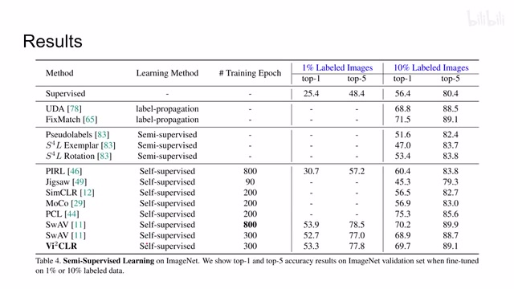
00:06:54–00:07:00 · 画面 01700:07:00–00:07:04 · 画面 018
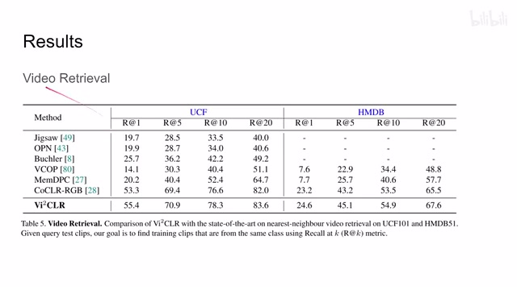
00:07:00–00:07:04 · 画面 018这里是我们的 Video Retrieval，看我们的 Video Encoder 性能还有 Video Classification。可以看到本文的方法虽然不是说是最优秀的，但总的来说也是在第一梯队的，是跟 state of the art 是 Comparable 的这么一个结果。当然其实这里更感兴趣的是作者做了一下 EvaluationEvaluation 总是能反映很多问题的。这里探讨的是 Clustering 聚类方法的选择，默认这里选择的是 Finch。
00:07:04–00:07:05 · 画面 019
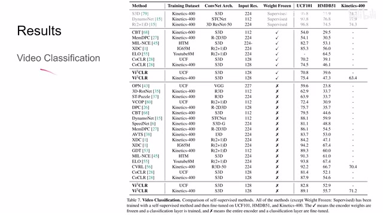
00:07:04–00:07:05 · 画面 01900:07:05–00:07:06 · 画面 020
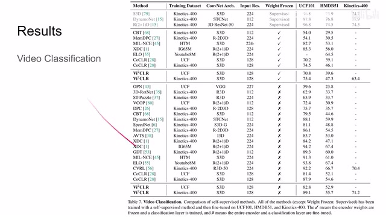
00:07:05–00:07:06 · 画面 02000:07:06–00:07:15 · 画面 021
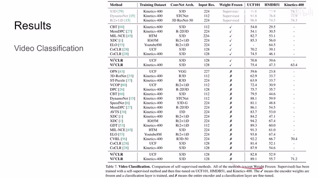
00:07:06–00:07:15 · 画面 02100:07:15–00:09:11 · 画面 022
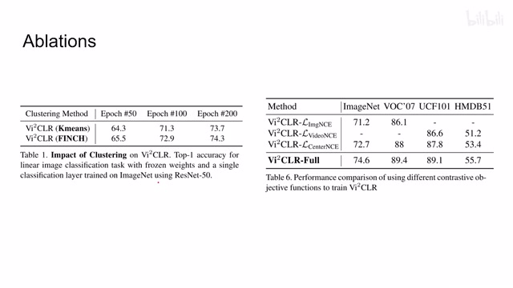
00:07:15–00:09:11 · 画面 022可以看到它取得一些结果。那为了做对比呢，作者把这个 finch 呢换成了这个 kmeans。那 kmeans 呢就需要来人工指定这个 k 的数量，这是它的一个巨大的缺陷吧。那么下面我们来看人工对的表现如何呢？肯定是干不动了对吧？这是一个并不让人意外的观测。那另外这个呢是一个非常有意思的实验啊，也我觉得是非常有价值的一个地方，就是我们讨论如果只把这个 clustering 加上用这个聚类的方法来去增加我们的这个来去增加我们无论是这个 image encoder 或者是 video encoder 他们的性能会得到什么样的结果呢？image encoder 这个结果呢跟这个 moco 的差不多。那 video encoder 的数据呢在这里，那么它的相对于这些之前的这些 self supervised learning 的这些方法一个优势呢就是我只需要过一次这个 encoder 就可以了，因为我没有两个 branch，我只有一个 branch。然后呢，当然它有额外的这个 clustering 聚类带来的这个计算的开销。
总之呢你可以清楚这两者之间的区别那同样的这里呢我们如果只使用这个 joint representation 这个 center nce 这 loss 呢也并不能够取得一个最好的结果当然是最好的结果呢就是所有的 loss 呢都用起来那么好的，那么总的来说呢，本文是通过这个 joint representation 啊，同时训练这个 video encoder 和 image encoder，是一个挺有意思的，把这个 video 和 image 之间这个 gap 抹平的这么一个设计。同时呢，也分别在各自领域呢取得了一个比较不错的结果，虽然不是说是最好的，但是它的结果呢也还是不错的。那总的来说呢，是一个非常有意思的设计。好的，那么以上就是我对这篇论文的简单分析，感谢您的收看，再见。
00:09:11–00:09:11 · 画面 023
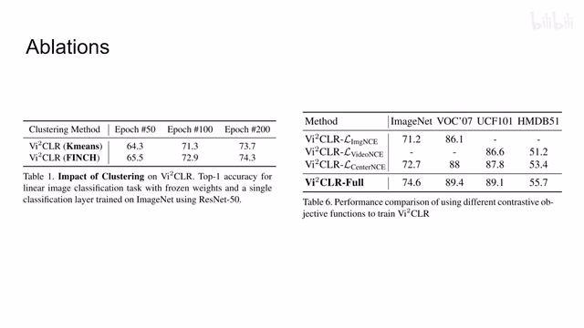
00:09:11–00:09:11 · 画面 023转写与来源说明 · 0 个自动复核提示
保留 26 个原始语音片段，0 个片段触发自动复核提示。提示仅用于定位可能的术语、重复或识别问题，不等于已确认错误。
讲解画面为源视频截图（640×360），不是可编辑 PPT 文件。全片按每秒 2 帧扫描内容变化，逐步展开页保留；连续动画保留代表画面。清晰度受源视频限制。
原视频：paper/合集_2026-10-16_表征学习/[论文简析]Vi2CLR Video and Image for Visual Contrastive Learning of Representation.mp4
SHA-256：3778742841c712055fdb1acb8cb75da485c04a480c327f4611982856646533f5
全文按视频语音与画面制作。原论文可从上方链接下载；完整资料包保留全文、原始逐字稿、字幕和校对记录。